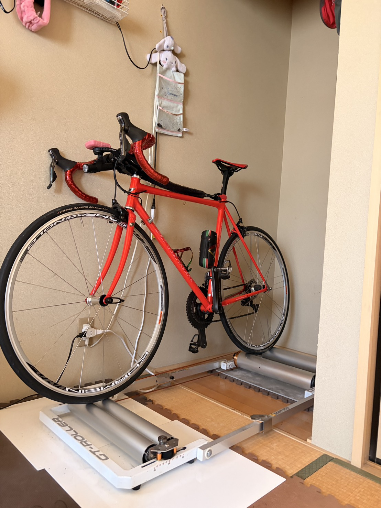
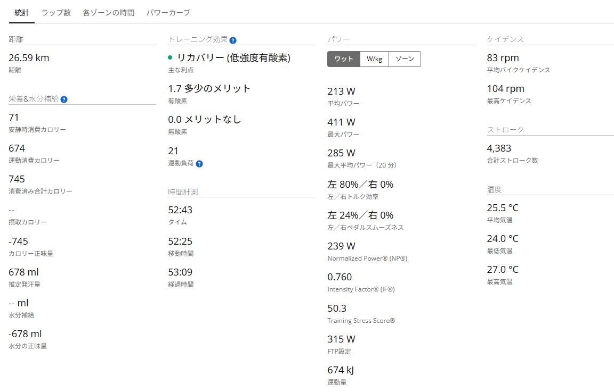
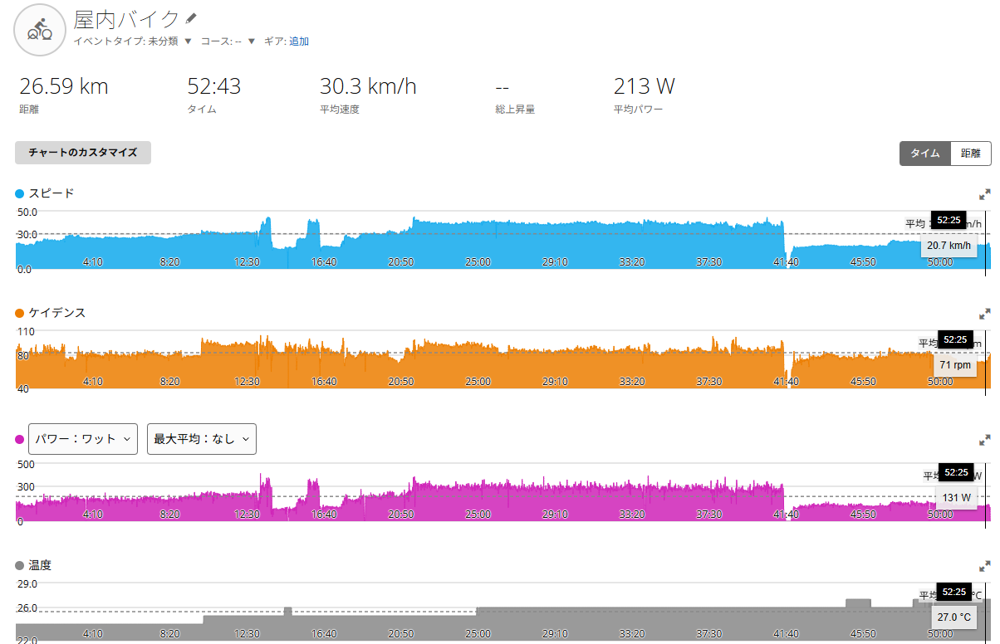

20分285W。15分までは行けると思ったが、そこから地獄だった
GT-ROLLER Q1.1とRNC7で20分走。数字は悪くない。でもGarminはリカバリーと言い、私はローラーの上でえづいていた。

ローラーというものがある。外に出なくても自転車に乗れる。天気に左右されない。信号もない。車も来ない。言い訳もできない。よくできた機材である。
ただし、よくできすぎている。外なら信号で止まれる。下りで休める。カーブで少し抜ける。景色を見て、なんとなく気を紛らわせることもできる。しかしローラーにはそれがない。
あるのは、ペダル。数字。自分の呼吸。そして、逃げ場のない時間。今回は、そんなローラー上で20分走をやった。富士ヒルクライムで一応ゴールドを狙うための、現在地確認である。
一応、である。ここは何度でも書いておきたい。私は富士ヒルゴールドを目指しているが、富士ヒルのために人生を明け渡したわけではない。楽しく続けることが最優先。苦しみたいわけではない。ただ、強くなりたいとは思っている。
このあたりが非常に面倒くさい。苦しみたくないのに、強くなりたい。強くなりたいのに、追い込みすぎたくはない。でも限界に近づく感じは、ちょっと楽しい。自転車乗りというのは、だいたい面倒くさい生き物である。
今回の目的
今回やったのは、ローラーでの20分走。完全にフレッシュな状態で行う正式なFTPテストというより、「20分走という高品質メニュー」「今の持続力を確認する実験」という位置づけである。
当面の目標は、ローラーで1時間300Wを回せるようになること。文字にすると簡単だ。1時間300W。はい、終わり。
しかし実際には、20分285Wで人間はえづく。つまり、まだ終わっていない。むしろ始まったばかりである。
使用環境と主なデータ
使用ローラーはGT-ROLLER Q1.1。バイクはRNC7。当時のGarmin FTP設定は315W。心拍計は未使用。この2つが、後で少し問題になる。特にFTP設定315W。今見ると、なかなか夢がある数字である。夢がありすぎた。
- 距離26.59km
- タイム52:43
- 移動時間52:25
- 最大パワー411W
- 運動量674kJ
- 平均ケイデンス83rpm

15分までは行けると思った
走り始めは、かなり感触がよかった。序盤から思ったより踏める。脚も動く。呼吸もまだ大丈夫。数字もそこまで悪くない。特に15分までは、290W前後を維持できていた。
この時点では、正直こう思っていた。これは意外といけるのでは？
人間はすぐ調子に乗る。特にローラーで数字が出ている時の人間は危ない。「今日は調子がいい」「このまま行けるかもしれない」「20分290Wくらい行けるのでは」。そんな都合のいいことを考え始める。
しかし、20分走は15分で終わらない。当たり前である。20分走は20分走なのだ。そして問題は、その残り5分だった。
15分を過ぎてから地獄になった
15分を過ぎたあたりから、一気にきつくなった。ここから先は、単に脚が重いとか、パワーが出ないとか、そういう話だけではなかった。
脚。呼吸。内臓。精神力。全部で耐える感じだった。
15分までは行けると思った。問題はその後だった。そこから先は、脚ではなく、呼吸と内臓とメンタルの共同作業だった。ローラーの上で、何かの共同プロジェクトが始まっていた。
ただし、参加メンバーの雰囲気は最悪である。脚は帰りたがっている。呼吸は荒れている。内臓は不満を言い始めている。メンタルだけが「あと少し」と言っている。かなりブラックな職場である。
そして15分を過ぎてから、激しくえづいた。ここで大事なのは、胃が空っぽだったことである。吐くものがなかった。
本人の感想としては、こうだった。胃が空っぽで吐くものがなかった。ラッキー。
普通に考えると、全然ラッキーではない。ローラーの上でえづいている時点で、だいぶおかしい。しかし、実際に吐かなかっただけマシ、という謎のポジティブ判定が発生した。人生で初めて、空腹をラッキーだと思った。

Garminはリカバリーと言った
ここで、今回いちばん納得がいかなかった話をする。Garmin上では、トレーニング効果がこう表示された。
- 主な利点リカバリー
- 有酸素1.7
- 無酸素0.0
- 運動負荷21
リカバリー。私はローラーの上でえづいていた。Garminはリカバリーと言った。私はローラーの上でえづいていた。たぶん、どちらかが嘘をついている。
もちろん、Garminが完全に悪いわけではない。当時のFTP設定が315Wだった。心拍計も使っていなかった。つまり、Garminからすると、20分285WはFTP設定315Wに対してそこまで高くない扱いになってしまう。さらに心拍データもないので、実際にどれだけ苦しかったかは分からない。
Garminは私のえづきを知らない。知らないなら仕方ない。でも、本人としてはリカバリーではない。
ということで、この後GarminのFTP設定を315Wから275Wに変更した。ここはかなり大事だと思う。GarminのFTPは、目標値ではなく現在地を入れるべきである。
目標を入れると、現実が軽く表示される。人間のプライドは守られるかもしれないが、練習管理はズレる。今回は、Garminに夢を見せすぎていた。現実に戻した。
体重は下振れ値として見る
ローラー後に体重も測った。全裸73.8kg。汗を吸った衣類あり75.2kg。
全裸73.8kg。一瞬、うれしい数字である。しかし、これはローラー後の脱水込みの参考値。本当に73kg台まで落ちたというより、水分が抜けた下振れ値として見るのが自然である。
こういう時に「痩せた！」と思うと危ない。この日は減量成功の日ではない。水分、塩分、糖質を戻す日である。
20分285Wを75kg基準で見ると、285W ÷ 75kg = 約3.8W/kg。脱水後の73.8kgで計算するともう少し良く見えるが、実力評価としては75kg前後で見る方が自然だと思う。
ローラー後の軽い体重は、勝利ではなく水分不足である。痩せたのではない。抜けたのである。何が抜けたのか。水分である。ついでに魂も少し抜けた気がする。
右肩の違和感
20分走後、右肩に筋肉疲労のような軽い痛みが出た。普段の外ライドではあまり出ない感覚だった。
AI側の見立てとしては、ローラー特有の固定姿勢が原因の可能性があるとのこと。高強度中に右手でハンドルを握り込んだ。右肩がすくんだ。上半身で踏ん張った。苦しくなってフォームが固まった。このあたりが考えられる。
たしかに、15分を過ぎてからは、フォームを整える余裕などほとんどなかった。たぶん、脚だけでなく上半身も総動員していたのだと思う。
- 次回意識肩を落とす
- 右手握り込まない
- 肘軽く曲げる
- 呼吸吐く息を長くする
- 確認5分ごとにフォームを見る
特に5分ごとのフォーム確認は良さそうだ。20分走は、最初の10分はまだ理性がある。15分を過ぎると、人間性が少しずつ失われる。だからこそ、意識的にフォームを戻す必要がある。
仮説、実行、結果、考察
今回の仮説は、「今の自分は短時間の出力はある程度出せるが、富士ヒル向けの20分以上の持続力には課題がある」というものだった。20分走をやることで、現在地と課題が分かるはず。
実行したのは、GT-ROLLER Q1.1での20分走。15分までは290W前後を維持できた。しかし15分過ぎから急激に苦しくなり、後半で垂れて20分平均285W。途中で激しくえづいたが、胃が空っぽで吐くものはなかった。
結果は、20分平均285W。推定FTPは約271W。GarminのFTP315W設定では、負荷が軽く表示されすぎることも分かった。その後、FTP設定は275Wへ変更した。
考察としては、20分285Wは成功。ただし、15分から先の粘りが課題。富士ヒルゴールドを目指すなら、単発で20分踏めるだけでは足りない。30分、45分、60分へ伸ばしていく必要がある。
ただし、焦って毎回限界テストをする必要はない。行ける日は限界に近づける。休む日はしっかり休む。翌日に重要なテストがある時は整える。このバランスが大事だと思う。
まとめ
今回の20分走は、平均285Wだった。15分までは290W前後を維持できていた。しかし、そこから先が地獄だった。
脚ではなく、呼吸と内臓とメンタルの共同作業。途中で激しくえづいたが、胃が空っぽで吐くものはなかった。普通なら最悪である。しかし、ローラー上に吐かなかったので、本人はラッキー判定をした。
Garminはこの練習をリカバリー扱いした。私はローラーの上でえづいていた。このズレから、FTP設定315Wが高すぎたこと、心拍計なしのトレーニング効果表示は過信できないことが分かった。
20分285Wは、現在地確認としては成功。ただし、15分から先の粘りが課題。次は20分290Wの完遂。その先に30分、45分、60分がある。
富士ヒルゴールドへの道は、たぶんこういう地味な確認の積み重ねなのだと思う。辛かった。でも、限界を攻めるのは楽しかった。これだから自転車乗りは面倒くさい。
そして今日の結論。Garminはリカバリーと言った。私はえづいていた。少なくとも今回は、私の内臓の方を信じたい。